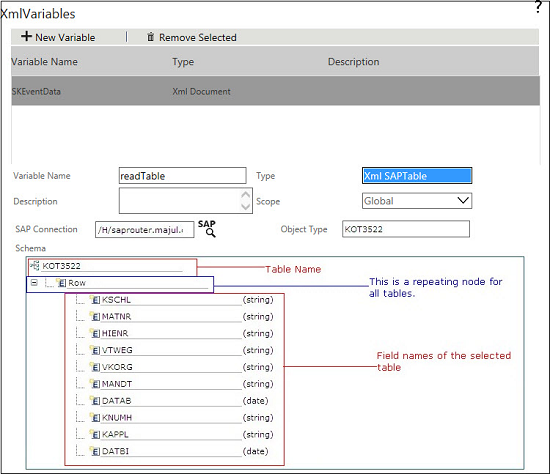
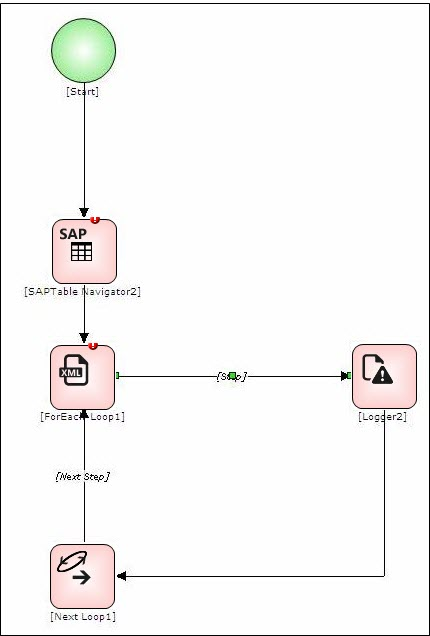

No
Using 'XML SAPTable' Type XML Variables
The XML SAPTable XML Variable has to be used in conjunction with the XML Iterator variable, For-Each Loop activity and Next Loop activity.
This example illustrates how to retrieve records from the table 'KOT3522'.
To achieve this, do the following steps:
- Design a workflow that has Start activity, SAPTable Navigator activity, For-Each Loop activity, Next Loop activity and Logger activity.
- Right-click on Start activity and then select Activity Properties.
- Click XMLVariables property and then create a XML Variable of type XML SAPTable called 'readTable' in Start activity. See Creating XMLVariable of type 'XML SAPTable' for more information.

- Create one more XML Variable of type XML Iterator called 'tableRecords' to iterate through the records.
- Right-click the SAPTable Navigator activity and select Activity Properties.
- Select the XML Variable 'readTable' from XML Variable of SAPTable Type property of SAPTable Navigator activity.
- Click Save.
- Build a query using SAPTable Query property of Navigator activity. See SAPTable Navigator Activity - SAPTable Query for building a query.
- Select table fields from SAPTable Fields List property. See SAPTable Navigator Activity - SAPTable Fields List for more information.
- Right-click the For-Each Loop activity and then select Activity Properties.
- Select the XML Iterator variable 'tableRecords' from XML Iterator property of For-Each Loop activity. See For-Each Loop Activity for more information.

- Right-click the Logger activity and select Activity Properties.
- Select LogMessage property and write the output to be displayed in the AVEVA Work Tasks Logger Console.
- You can see the output in Logger Console. The output is stored in the XML Variable of type XML Iterator. In this example, the output is stored in 'tableRecords' XML Variable.